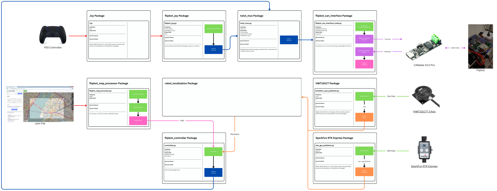

About the project
Autonomous outdoor navigation for a 1/5-scale RC car, built during an internship at Gensurv Robotics.
Lane-level driving outdoors needs position accuracy far beyond standard GPS, plus a map of where the lanes are.
The car, called Flipbot, carries a SparkFun RTK Express receiver and a WitMotion yaw sensor, and an extended Kalman filter fuses them into its pose. A map processor turns OpenStreetMap or Lanelet2 maps into a path, and the path follower drives the car over CAN bus. A PS5 controller can take over through twist_mux for manual driving.
Pure Pursuit, Stanley, and a combined controller were compared on the real car, and localization stayed below 10 cm outdoors.
Process
Get centimeter-level position
RTK GNSS gives the position, and an extended Kalman filter fuses it into the vehicle state in real time.
Use HD maps
Lanelet2 HD maps define the lanes and routes the car follows.
Compare controllers
Pure Pursuit, Stanley and a combined controller are implemented and compared on the real car.
Make it safe and deployable
CAN bus drives the motor and steering servo, and the ROS 2 system runs in Docker with safety supervisors.
Results
- Localization accuracy stayed below 10 cm in real outdoor conditions.
Figures

System
| Vehicle | Flipbot, a 1/5-scale RC car |
|---|---|
| Localization | SparkFun RTK Express GNSS and WitMotion HWT101CT yaw sensor, fused with an EKF |
| Maps | OpenStreetMap files or Lanelet2 maps, processed into a path |
| Motor interface | CAN bus through a CANable V2.0 Pro adapter |
| Manual control | PS5 controller through twist_mux |
| Software | ROS 2, Docker |
| Role | Robotics Software Engineer Intern |